Syntax-Directed Translation
Overview
Why?
有些性質無法直接用 context-free grammar(以下簡稱CFG) 表示，舉例來說：變數不能在宣告前被使用，就不是 CFG 的性質。
Solutions:
- 用 context-sensitive grammars (貴)
- 用 CFG 加上 attributes 及 semantic rules(semantic actions)
- Syntax-directed definitions (SDD)
- Syntax-directed translation scheme (SDT)
Attributes
為 identifier 加上一些性質：
- 常數 (numbers or strings)
- 型別 (for type checking)
- scope 的資訊 (判斷 local/global)
- 記憶體位置 (local 變數或 function 參數的 frame index)
- Intermediate program 表示法
Syntax-Directed Translation
- Grammar symbols 用 Attribute 來知道 programming language 的 structure
- 透過 Semantic rules (與 production rules 關聯) 來決定這些 Attribute 的值
- 透過這些 Semantic rule
- 生成 intermidiate code
- 生成 symbol table
- 做 type checking
- 生成 error message
- …
SDD & SDT
當我們用 Semantic rules 關聯 Production rules 時，使用以下兩種表示法：
- Syntax-Directed Definitions (SDD)
- 提供 high-level 的規範
- 將 production rule 與一組 semantic rules 做關聯，但沒有指定 rule 的檢查順序
- Syntax-Directed Translation Schemes (SDT)
- SDD 的補充
- 在 production rule 中加入 semantic actions (一段程式)
- 指定 semantic actions 的檢查順序
SDD
SDD = CFG + Attributes + Semantic Rules
e.g. infix-to-postfix translation ()
| Production | Semantic Rules |
|---|---|
| … | … |
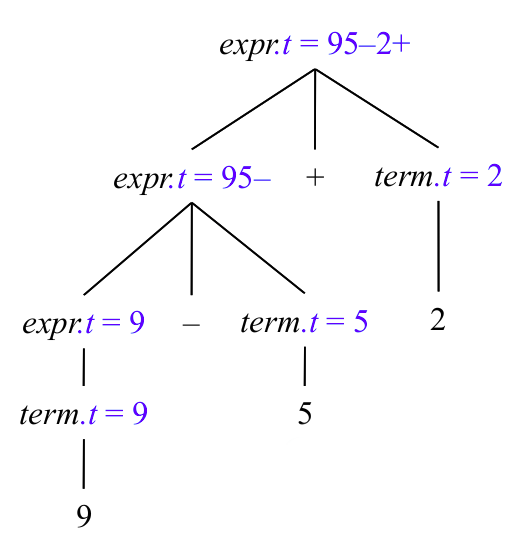
SDT
補充 SDD，指定 semantic action 在何時執行，舉例來說：：
semantic action 會在 term 被 derived 後執行
再以上面 SDD 的例子來說，SDT 會長成這個樣子：
就可以指定要在什麼時候執行 semantic action 了
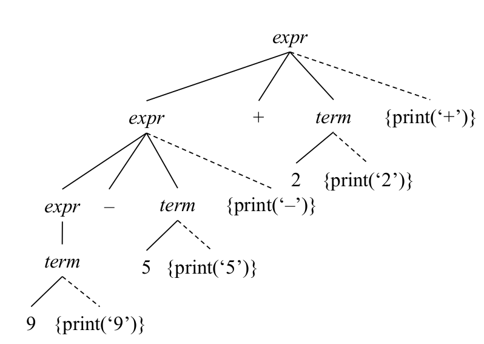
Syntax-Directed Definitions
SDD = CFG + Attributes + Semantic Rules
- Semantic rules 與 Production rules 相關
- Attrubutes 與 Grammar symbols 相關
- Synthesized attribute
- Inherited attribute
- Terminal 只能有 Synthesized attribute 不能有 Inherited attribute
Types of Attributes
Synthesized Attributes
for nonterminal ，如果這個 Node 的 attribute 是透過他自己或是他的 children得到，則稱作 Synthesized Attributes
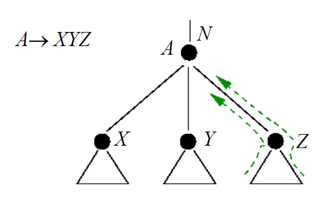
Inherited Attributes
for nonterminal ，如果這個 Node 的 attribute 是透過他的 parents 或是他的 sibling得到，則稱作 Inherited Attributes
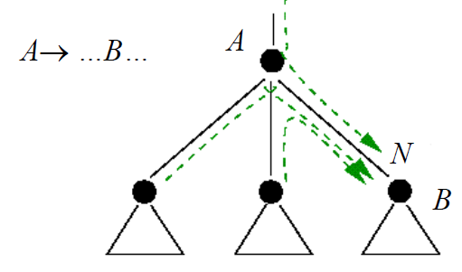
Evaluation Orders
依據 dependency 來 evaluate，但有 cycle 的 dependency 無法被 evaluate
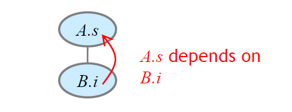
| Production | Semantic Rules |
|---|---|
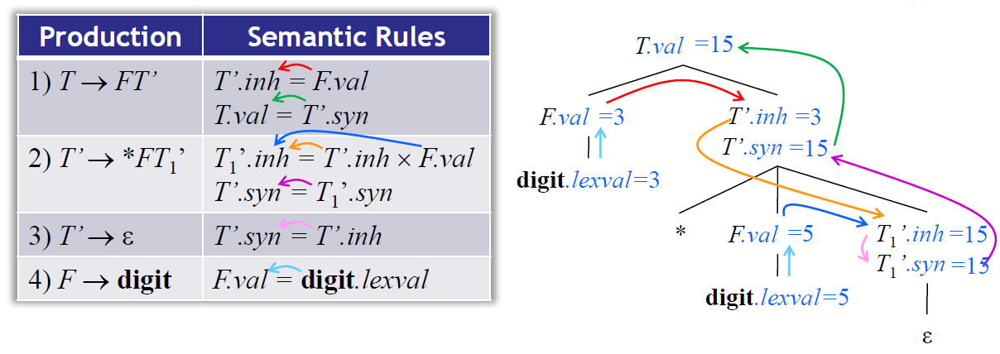
- 有 Synthesized Attributes:
- 有 Synthesized Attributes:
- 有
- Synthesized Attributes:
- Inherited Attributes:
Inherited attributes are useful when the structure of a parse tree does not “match” the abstract syntax of the source code
用 topological sort 來尋找 evaluation 的順序，若存在環，則沒有 topological sort，無法 evaluate SDD
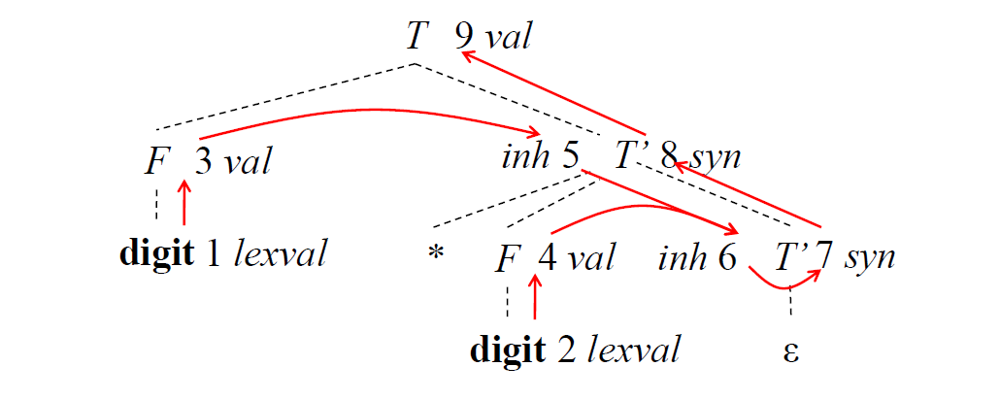
- 1, 2, 3, 4, 5, 6, 7, 8, 9
- 1, 3, 5, 2, 4, 6, 7, 8, 9
- …
但只給定 SDD，很難直接去判斷說到底有沒有環，所以還是要建 parse tree、檢查沒有環，才能 evaluatte attribute。最理想的情況是可以一邊 parse 一邊 evaluation，因此有了以下兩種固定 evaluation order 的 SDD:
- S-attributed SDD (S for synthesized)
- 僅包含 synthesized attributes
- L-attributed SDD (L for left-to-right)
- 包含 inherited、synthesized attributes
- dependency-graph 只能 left-to-right
所有 S-attributed SDD 都為 L-attributed SDD
S-Attributed Definitions
當所有 Attribute 都為 Synthesized，則這個 SDD 為 S-Attributed，可以用 bottom-up 的 evaluation，剛好在 bottom-up parsing 的時候 (postorder traversal) 可以順便進行 evaluation
L-Attributed Definitions
Attribute 必須是:
- Synthesized
- Inherited，且滿足條件:
- 假設有 production: ，且有一個 inherited attribute 透過以下其中一種 rule 算出:
- Inherited attributes 與 head 有關聯
- Inherited 或 Synthesized attributes 與左方的 有關聯
- Inherited 或 Synthesized attributes 與自己 有關聯，但 的 Attributes 在 dependency graph 中不能有 cycle
- 假設有 production: ，且有一個 inherited attribute 透過以下其中一種 rule 算出:
For example:
| Production | Semantic Rules |
|---|---|
滿足 L-Attributed 的定義，每個 rules 都滿足 from above or from the left
| Production | Semantic Rules |
|---|---|
不滿足 L-Attributed
Semantic Rules with Side Effects
Side effect: 沒有被 attribute 定義的 statement。(e.g. print(…))
| Production | Semantic Rules |
|---|---|
Side effect 會被當作 production head 的 dummy synthesized attributed
沒有 side effect 的 SDD 被稱作 attribute grammar
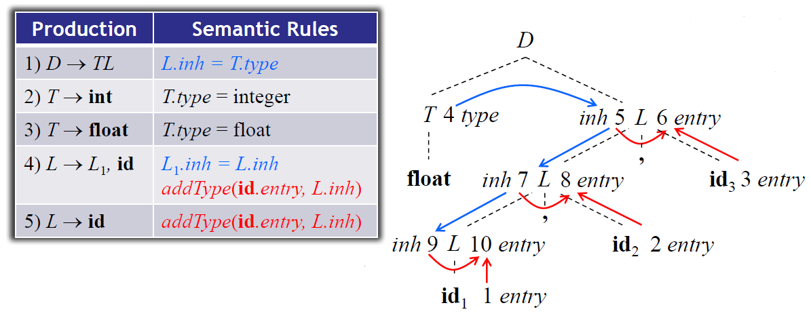
Applications of Syntax-Directed Translation
- Type checking
- Intermediate-code generation
- Construction of syntax trees
Abstract Syntax Tree (AST)
Abstract Syntax Tree: 將 Parse Tree 的資訊精簡
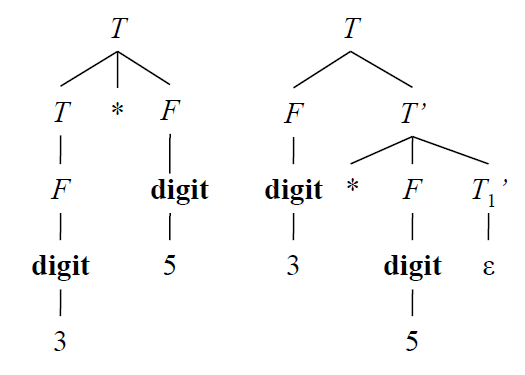
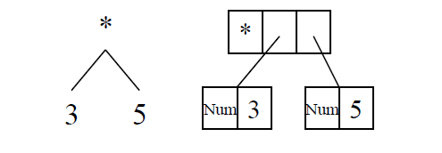
Construction of Syntax Trees
S-Attributed SDD
Bottom-up parsing
| Production | Semantic Rules |
|---|---|
| 1) | .node = new Node(‘+’, .node, .node) |
| 2) | .node = new Node(‘–’, .node, .node) |
| 3) | .node = .node |
| 4) | .node = .node |
| 5) | .node = new Leaf(, .entry) |
| 6) | .node = new Leaf(, .val) |
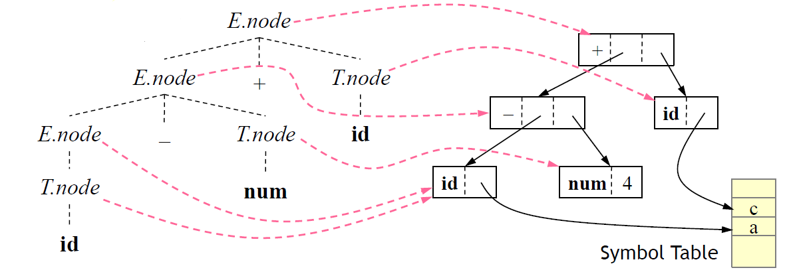
- p1 = new Leaf(id, entry-a);
- p2 = new Leaf(num, 4);
- p3 = new Node(‘–’, p1, p2);
- p4 = new Leaf(id, entry-c);
- p5 = new Node(‘+’, p3, p4);
L-Attributed SDD
Top-down parsing
| Production | Semantic Rules |
|---|---|
| 1) | |
| 2) | = new Node( ‘’, , ) |
| 3) | = new Node( ‘’, , ) |
| 4) | |
| 5) | |
| 6) | = new Leaf(, ) |
| 7) | = new Leaf(, ) |
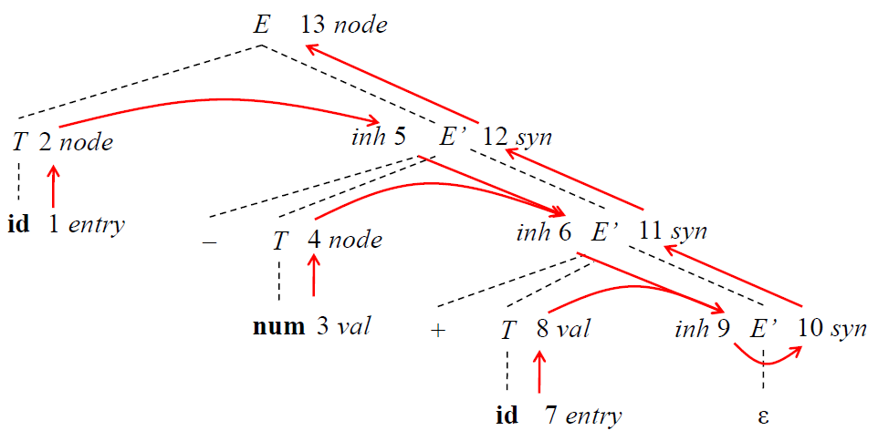
Structure of a Type
Inherited attributes are useful when the structure of the parse tree differs from the abstract syntax of the input
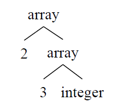
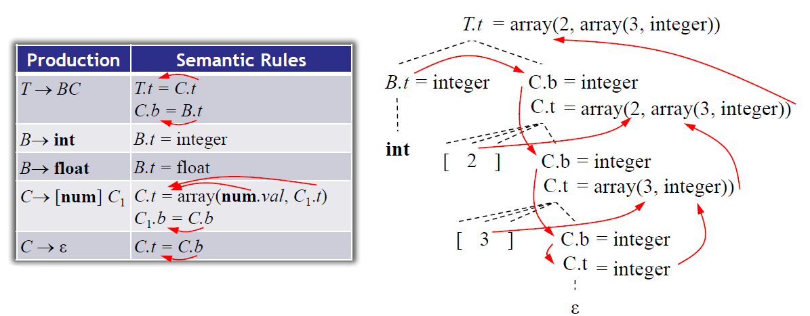
Attribute 可以從一個 subtree 帶 information 到另一個 subtree
Syntax-Directed Translation Schemes
SDT = CFG + Program Fragments (semantic actions)，actions 以 preorder traversal 執行
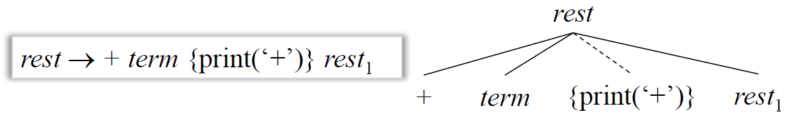
SDT 會在 parsing 的時候 implement，將 program fragment 表示成一個 nonterminal
SDT 可以 implement 兩種 SDD：
- LR-parsable grammar: S-attributed SDD
- LL-parsable grammar: L-attributed SDD
Implementing SDD’s/SDT’s
S-Attributed SDD’s
Simplest SDD:
- parse the grammar bottom-up
- SDD is S-attributed
S-attributed SDD SDT:
- action 放在 production 後面
- 當 reduction 時執行那個 action
若所有 action 都在 right end，則這個 SDT 稱作 postfix SDT’s
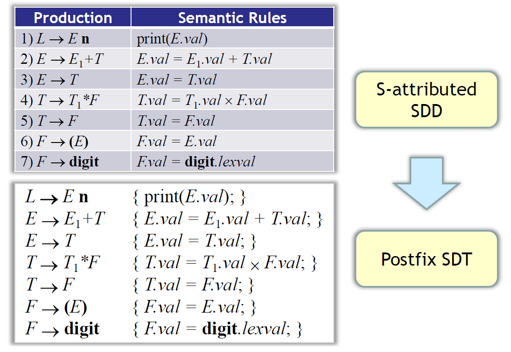
Parser-Stack
Attribute 在 production 被 parse 的時候會 push 到 stack，reduction 時會 pop
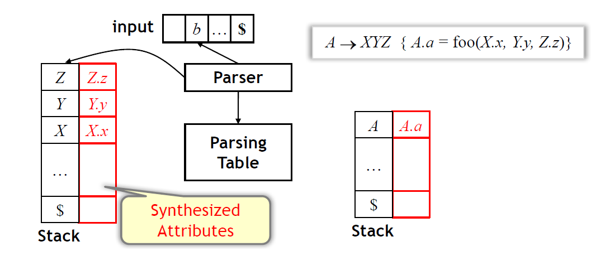
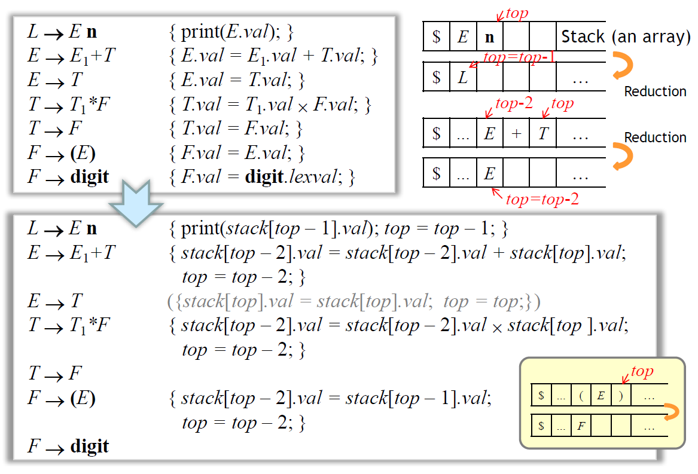
Traversing An Annotated Parse Tree
Actions Inside Productions
- Bottom-up parsing: action 會在 出現在 parsing stack 的 top 時立刻執行
- Top-down parsing: action 會在嘗試將 Y 展開、檢查 input 之前執行
Conflict Problem
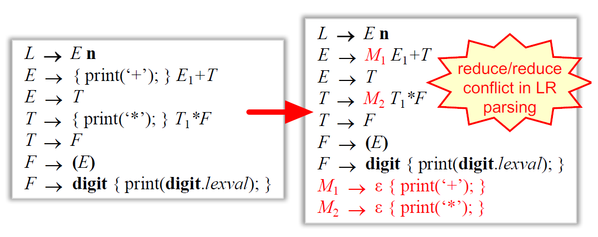
parser 不知道是要 reduce 回 或是 reduce 回 ，導致 reduce/reduce conflict
solution: 對 action 改用 marker nonterminals
General SDT Implementation
- 建一個 parse tree (忽略 actions)
- 將 action 加到 node 中
- 執行 preorder traversal
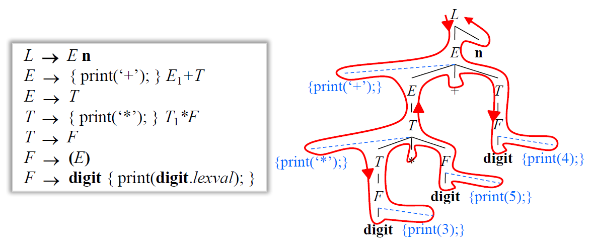
Eliminating Left Recursion
把 actions 當作 terminal symbols 做 eliminating left recursion，舉例來說:
General Case
當 action 做的不只是 print output，有包含 attribute 的計算時，需要考慮 elimination 時 action 的位置
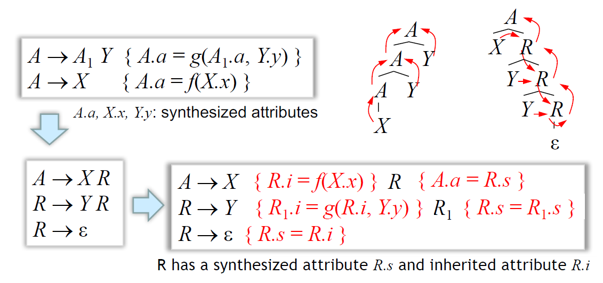
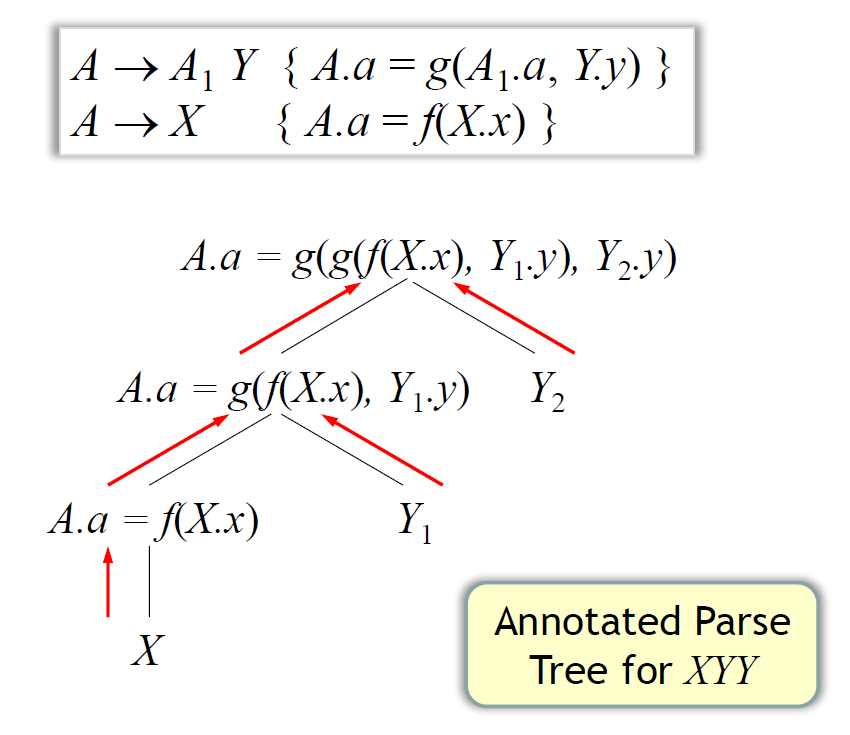
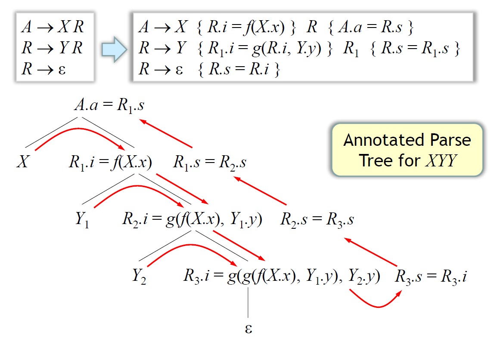
L-Attributed SDD’s
Rule:
- 將有關 noterminal 的 inherited attributes 的相關計算，放在 之前
- 將有關 production head 的 synthesized attribute 的相關計算，放在 body 最後面
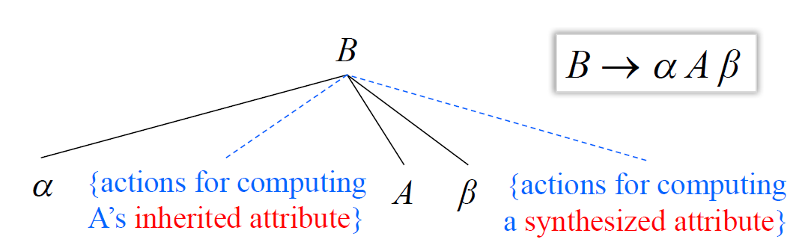
以 為例：
1 | S1.next: |
- Inherited attributes:
- : 標記 S 做完之後的位置
- : 標記 condition C 為 true 後的位置
- : 標記 condition C 為 false 後的位置
- Synthesized attributes:
- : 的 code，及 jump 到
- : 的 code，及 jump 到 或
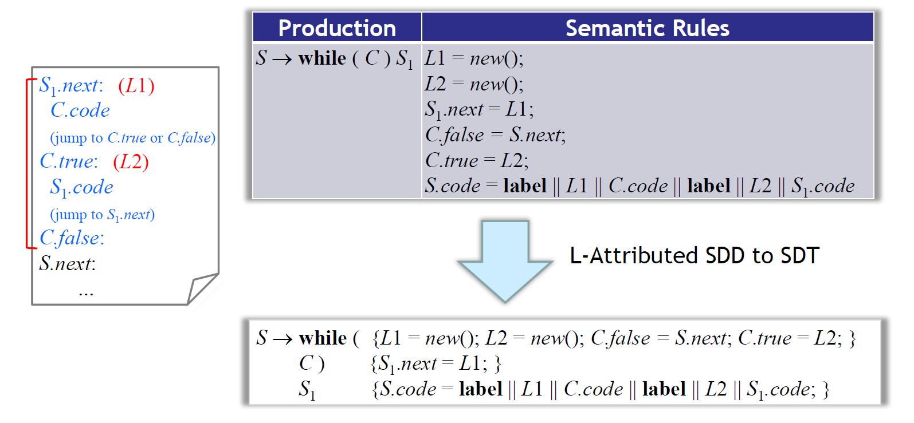
Implementing L-Attributed SDD’s
- Traversing parse Tree:
- Annotated parse tree
- For any noncircular SDD
- 建 parse tree，加上 actions，以 preorder 執行 actions (General SDT Implementation + L-Attributed SDD’s)
- For any L-attributed SDD
- Annotated parse tree
- Translation during parsing:
- Recursive-descent parser
- Generate code on the fly (using recursive-descent parser)
- 實作 SDT 在 LL-parser
- 實作 SDT 在 LR-parser
During Top-Down Parsing
在 recursive-descent parser 中，對所有 nonterminal 都有對應到一個 function
- function 的 arguments 為 nonterminal 的 inherited attributes
- function 的 return-value 為 nonterminal 的 synthesized attributes 的集合
以前面 while 的例子：
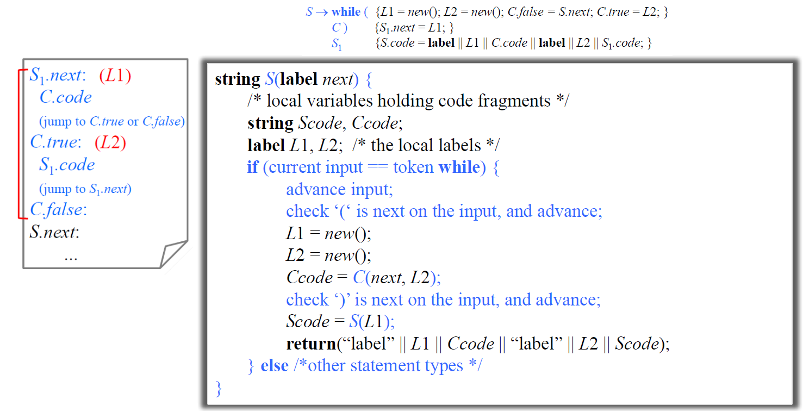
在 attribute 裡面再宣告變數放 code 其實沒有必要，直接用 main attribute (synthesized): , (不懂)
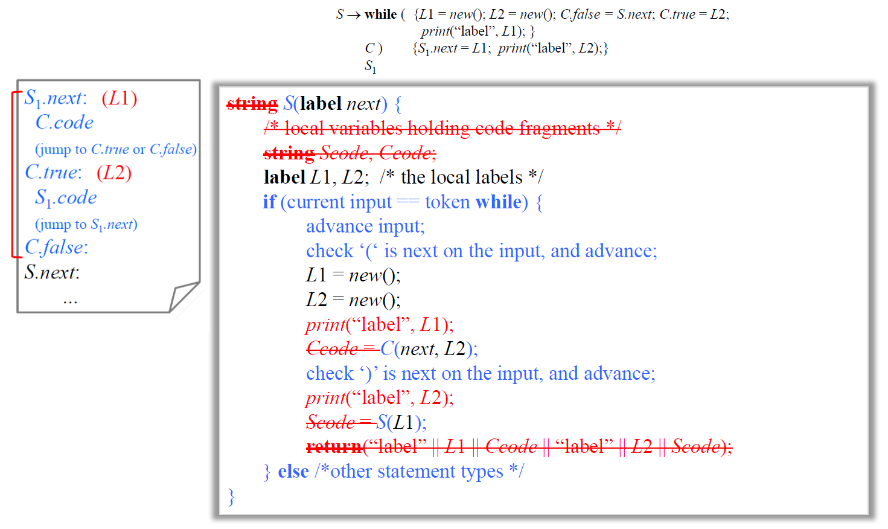